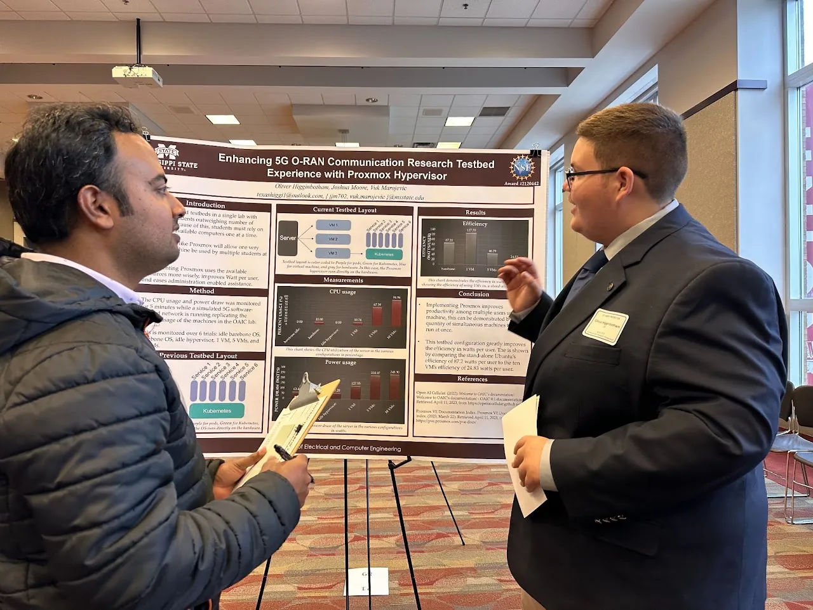

CommunityService & Outreach
Reviewing, conference leadership, university service, and bringing engineering to the community
Scholarly community
Editorial & Peer Review
Conferences
Conference Leadership
Louisiana State University
University Service
Community
Photos in the gallery →
Outreach & Community
Beyond campus
Professional Engagement
ASTRA Lab